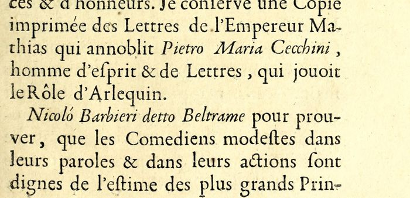
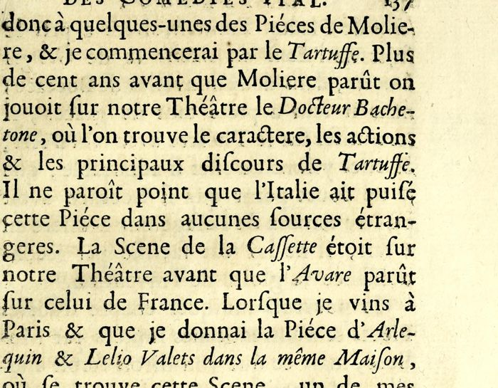

Harlequin’s costume and the ancient mimes (pp. 4–6)
French: Paris 1728, ch. I, pp. 4–6, scans n25–n27 (OCR, checked against the page heads).
Riccoboni argues that the shows that survived the fall of Rome best were those that needed least literature: “the games of the mimes and pantomimes, those of the mountebanks in the public squares”. Harlequin’s suit, “if someone examined it today as a new invention”, would seem the most extravagant ever imagined; he derives it from the shaven-headed mimes called planipedes, quoting Apuleius on the mime’s centunculus, his patchwork coat: “Dans un seul mot, Mimi centunculo, voilà l’habit d’Arlequin désigné” (in two words, the habit of Harlequin). Lecky’s note 112 cites these pages for the mountebanks as “the origin of the modern pantomime”.
The Calandra (pp. 32–33)
French: Paris 1728, pp. 32–33, scans n53–n54.
… La Calandra by Bernardo Dovizi da Bibbiena, later Cardinal, was likewise printed in 1523, although the printing of the copy in the library …
Original French
… La Calandra di Bernardo Divitio da Bibiena poi Cardinale, est pareillement imprimée de 1523. quoique l’impression de l’Exemplaire qui se trouve dans la Bibliotheque …
Lecky’s note 129 supports “the first regular Italian comedy appears to have been the ‘Calandra,’ and its author was the Cardinal Bibbiena”. Riccoboni, on the same page, thinks an older comedy, the Floriana, was written about 1400.
A Harlequin ennobled by the Emperor (p. 57; Lecky says p. 89)
French: Paris 1728, p. 57, scan n112.

… they carried the excellence of their art so far that they were called to every court in Europe. The Emperor and the King of France loaded them with favours and honours. I keep a printed copy of the letters of the Emperor Matthias ennobling Pier Maria Cecchini, a man of wit and letters, who played the part of Harlequin.
Original French
… ils porterent si loin l’excellence de leur Art qu’ils furent appellés à toutes les Cours de l’Europe. L’Empereur & le Roi de France les comblerent de graces & d’honneurs. Je conserve une Copie imprimée des Lettres de l’Empereur Mathias qui annoblit Pietro Maria Cecchini, homme d’esprit & de Lettres, qui jouoit le Rôle d’Arlequin.
Lecky’s note 123 (“Cecchino … He was ennobled by the Emperor of Germany”) cites “tom. i. p. 89”; in this printing p. 89 is the end of the historical part, and Cecchini appears, besides p. 57, on p. 42 (OCR only), with his stage name Frittellino. Cecchini’s defence of the theatre, which Lecky dates 1621, is not on these pages.
“Il Dottor Bachetone” and Tartuffe (p. 137)
French: Paris 1728, catalogue of comedies, p. 137, scan n194.

… [I come] then to some of Molière’s plays, and I shall begin with Tartuffe. More than a hundred years before Molière appeared, our theatre was playing Il Dottor Bachetone, in which one finds the character, the actions and the principal speeches of Tartuffe. Italy does not appear to have drawn this play from any foreign source. The scene of the casket was on our stage before L’Avare appeared on the French one. When I came to Paris and gave the piece Harlequin and Lelio, Servants in the Same House, which contains that scene, a friend reproached me for giving the public a copy of Molière, much inferior to the original; … I would not admit that our scene was imitated from Molière’s. I undeceived my friend and showed him that Molière had imitated it entirely from us …
Original French
… donc à quelques-unes des Piéces de Moliere, & je commencerai par le Tartuffe. Plus de cent ans avant que Moliere parût on jouoit sur notre Théâtre le Docteur Bachetone, où l’on trouve le caractere, les actions & les principaux discours de Tartuffe. Il ne paroît point que l’Italie ait puisé cette Piéce dans aucunes sources étrangeres. La Scene de la Cassette étoit sur notre Théâtre avant que l’Avare parût sur celui de France. Lorsque je vins à Paris & que je donnai la Piéce d’Arlequin & Lelio Valets dans la même Maison, où se trouve cette Scene, un de mes Amis me reprocha d’avoir donné au Public une copie de Moliere, bien inferieure à l’Original; … je ne voulus point convenir que notre Scene fût imitée de celle de Moliere. Je detrompai mon Ami & je lui fis voir que Moliere l’avoit entierement imitée de nous …
Lecky’s note 133 (“Riccoboni, however, asserts that Moliere took the character, and even some of the incidents and speeches, of his Tartuffe from an old Italian play called Doctor Bachetone (tom. i. p. 137)”) is exact; Lecky rightly presents it as Riccoboni’s assertion. (The OCR of Lecky’s note read “Eachetone”; his page prints “Bachetone”, as Riccoboni does.)
A comedy before Clement VII and the Emperor (p. 183)
French: Paris 1728, catalogue of comedies, p. 183, scan n240 (OCR, checked against the page head).
The page continues Riccoboni’s note on a comedy whose “representation was made before Pope Clement VII and the Emperor”; Alessandro Velutello, in an apology printed with it, claimed it was the first comedy in verse. Lecky’s note 132 cites this page for Clement VII and Charles V at Bologna watching “the comedy of ‘The Three Tyrants,’ by Ricci”. The play’s title falls on the previous page, which was not read.
Backlinks
Every place in Rationalism in Europe that links to this page (generated automatically when the site is built).